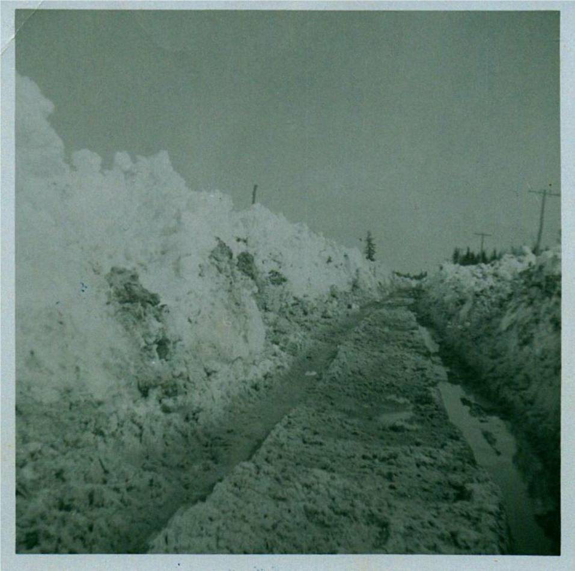

The Family Chronicle
No. 65 March 10, 2004
________________

Another snow scene - Little Branch Road, just above home, on April 16, 1961
With snow on the side of the road, roads were often mini lakes when spring came. When walking, people would step on to the bank to walk past the puddle.
On one such occasion, Mrs. Harper was walking above our place. The banks were not as high as in the photo. She stepped up on the bank. As she walked her feet began to break through the snow. The snow was soft and packed easily. Each time she tried to lift one foot out of the snow, the other would cut in.
George and I must have been playing near by because I remember helping dig her foot out of the snow and walk past the pool of water.
Running water brings different thought to the mind of different people. It often reminds me of the spring run-off down our hill.
Above our place the land was flat and gathered water. Puddles were pools when the snow was melting. Banks of snow on the sides of the road and shallow ditches kept the water on the road and soon it was running down the centre of the road. Soon the road would begin to wash out.
The men would dig a ditch/trench over top of the ditch to get the water to run there. Running water soon cut through the snow and kept the water off the road. Culverts at the end of lanes posed a problem because sometimes they were frozen full.
A January Thaw
Reports of warming weather reminds me of a January thaw. In 1946. I think it was January but it could have been later, I was in Grade eleven which was the last year of high school. All my older brothers were away; Ken and John were working for Hubert Matchett in the woods at Sunny Corner; Norm may have been up there at the time also.
Anyway, I was at home doing the chores and attending school. One morning about 6:00 am I arose, started a fire and headed for the barn to feed and milk the cows. In my right hand, I had a lantern (this was a couple of years before electricity arrived in Black River); under my right arm I was holding three milk pails.
It had rained in the night. Not only was the barn yard a sheet of ice, it was wet ice and very slippery (Or was it slippy?). I stepped off the back step and after two or three strides, my feet went out from under me. I was flat on my back still holding the lantern altugh the milk pails had slithered across the yard. Not a problem. I gathered everything up again and walked gingerly across the yard to the safety of the cow barn. The return trip with full pails of milk was less spectacular.
Janet Watling asked recently about the early Watlings at the Meadows. It is confusing because, as we know, there were at least three Jubal Watlings.
Jubal 1 married Susan Leach. I have no evidence that they came to Canada or Black River.
A Jubal Watling, I believe to be Jubal 2 married to Christina MacNaughton, petitioned (F4243) for 50 acres of land “situate as follows: on the South side of Black River adjoining south of William McBeath’s meadow lot and east of a lot applied for by John Edge. The petition is dated at Chatham on April 9, 1851 and includes Jubal’s signature. The property was vacant, surveyed but without improvements. Other hand written notes on the page are confusing in that they show apparent approval on May 21/1851 and Auction, August 51". The papers are signed by Peters, the Deputy Surveyor. Lot number not given.
The New Brunswick Crown Lands Grant Index shows a grant of 100 acres located at A30 BL. 15 SE SD Black River, Glenelg Parish Northumberland County to Jubal Watling, Jr. on April 20, 1884. (Recorded in vol. 105, No.18287)
This is located in an area known as the Meadows - a name that has long since disappeared. This, I believe, is Jubal 3 who married Grace MacDonald. Jubal and Grace moved to Little Branch, in 1900 or 1901 to the place where Neil Watling now lives.
According to the New Brunswick Land Grants Index, neighbours in the Meadows starting at Route 11 were:
Lot Grantee Acres Date Granted
26 Terrence Cook 150 Ac. 1833-07-24
27 Patrick Smith 112 Ac 1838-12-21
28 Richard Hutchison 100 Ac 1849-06-04
29 Gardiner Archibald 98 Ac 1880-05-10
30 Jubal Watling, Jr 100 Ac 1881-04-20
31 Donald Cameron 100 Ac 1854-01-30
33 Unknown
34 Donald McBeath 1883-03-09
I believe there was a road to the Meadows along the south side of the Black River starting at Route 11. Ken remembers visiting the property. I think that I was there once picking blueberries. At that time a mound for the old root cellar still could be seen. The old property has reverted to forest and the community has disappeared. The forests have now reclaimed whatever fields were cleared.
The Chronicle is an occasional newsletter published by Don Glendenning It is designed to share information about my family, community and the times in which I grew up. While every effort is made to be accurate, errors are likely to occur. Comments, enquiries and information may be sent to 62 Queen Elizabeth Drive, Charlottetown, PEI, C1A 3A9. Tel: 902-892-5859 Email: don@glendenning.net Web: www.glendenning.net